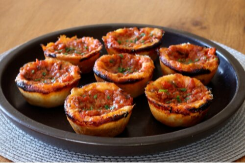

Chicago Deep-Dish Pizza Muffins

Description
Put down the fork and knife… here's a Chicago deep-dish pizza that you can actually eat by holding it in your hands! A beautiful golden crust contains a meaty, cheesy, saucy filling with Italian sausage, sweet peppers, and 3 types of cheese. The sauce and cheese char slightly on the outside as they bake, resulting in a super savory taste.
Ingredients
- 2 teaspoons olive olive
- 4 ounces provolone cheese, diced
- ¾ cup cooked, crumbled Italian sausage
- ½ cup cooked, diced sweet peppers
- 4 ounces mozzarella cheese, grated
- ½ cup prepared pizza sauce
- ¾ cup freshly grated Parmigiano-Reggiano cheese
- 1 (16 ounce) package cold, prepared pizza dough